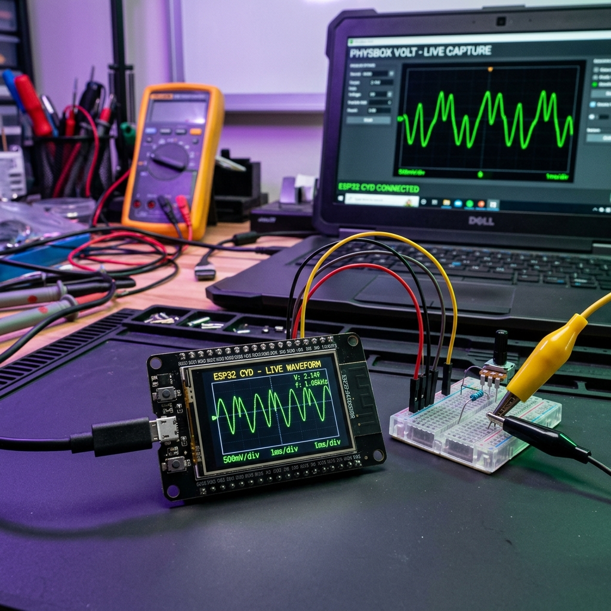
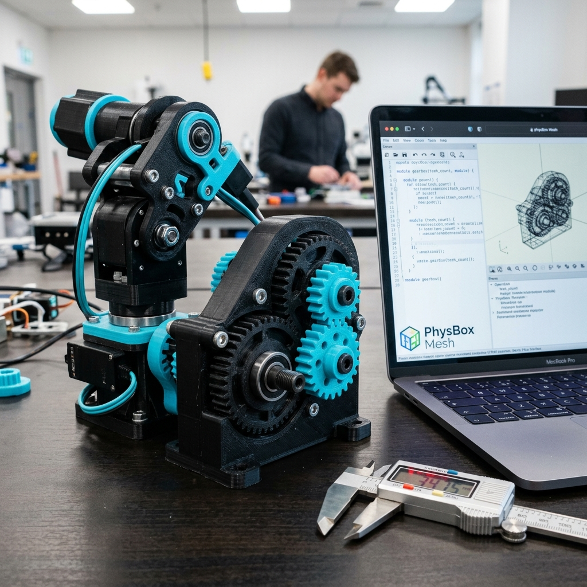
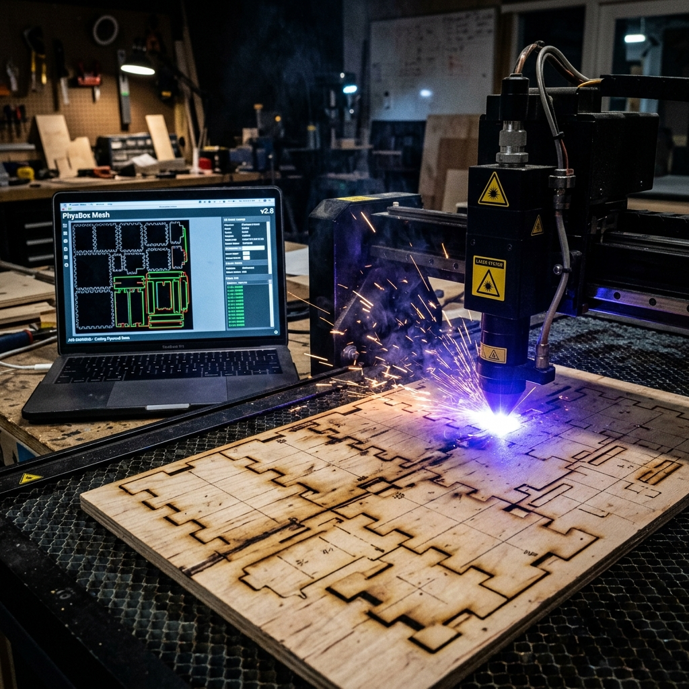

An in-depth technical exploration of how PhysBox: Volt bridges physical ESP32/CYD microcontrollers, 2-layer copper PCB isolation milling, and live 3D co-simulation — and how PhysBox: Mesh and Etch turn Lattice, Sculpt, and OpenSCAD geometry into multi-material 3MF prints, separable silicone & slip-cast molds, timber joinery, and live WebSerial CNC/laser cuts.
Connect real ESP32 & CYD silicon in realtime, drive 3D MuJoCo motors and speaker enclosures live, and carve double-sided copper-clad boards with conductive Z heightmaps.

In traditional EDA, schematic capture, firmware execution, mechanical loads, and board fabrication live in separate tools. PhysBox Volt unifies a realtime Serial & WebSocket HIL Bridge, synchronous XSPICE/Ngspice simulation, live Volt↔Mesh co-simulation, and direct WebSerial PCB milling.
Route single- or 2-layer copper boards with automatic copper flood and pad clearance rings, probe a 16-point conductive heightmap straight off the copper blank, and stream isolation, drilling, spoilboard flip-alignment pin holes, and SMD solder-paste stencils without leaving the tab.
Lookahead-buffered binary I/O frames keep MicroPython and C++ firmware synchronized in realtime with simulated rail thresholds.
Bind NEMA 17 steppers, DC gearmotors, and Thiele-Small speakers in Volt directly to 3D joints and cavities in Mesh.
Probes a 4×4 Z heightmap using the V-bit on copper-clad FR4, drills spoilboard flip-alignment pins, and exports Gerbers or Etch paste stencils.
Read quiescent DC wire chips, sweep small-signal Bode magnitude/phase (−3 dB corner), and flag overloaded parts automatically.
hil_bridge.py)
import machine, time, select, sys
# Initialize high-speed UART for realtime PhysBox Volt HIL Bridge
uart = machine.UART(1, baudrate=460800, tx=22, rx=23)
adc = machine.ADC(machine.Pin(34))
dac = machine.DAC(machine.Pin(25))
print("[HIL] Connected to PhysBox Volt SPICE Engine")
while True:
if select.select([sys.stdin], [], [], 0)[0]:
cmd = sys.stdin.readline().strip()
if cmd.startswith("DAC:"):
val = int(cmd.split(":")[1])
dac.write(val) # Update physical DAC output from WASM circuit model
raw_val = adc.read()
# Batch telemetry: ADC raw value + timestamp tick
uart.write(f"ADC:{raw_val}:{time.ticks_us()}\n")
time.sleep_us(500)Model in Lattice cages, sculpted clay, or WASM OpenSCAD; verify MuJoCo mechanics, DFM overhangs, and ballast; then export slicer-ready 3MF/STL prints, separable silicone molds, or plaster slip-cast shells.

PhysBox Mesh combines three complementary modelling engines — decade-grid Lattice cages with subdivision and live edge rounding, clay sculpting with silhouette scissors, and an embedded WASM OpenSCAD compiler — backed by exact Manifold booleans and automatic V-HACD concave collision.
Run DFM checks to spot thin walls and steep overhangs, balance top-heavy or floating parts internally with M4–M16 steel hex-nut ballast cavities, split oversized parts with registration pegs to fit your build plate, or generate separable silicone/rigid pour molds (with sliding C-clips and PVA dissolvable liners) and plaster slip-cast molds — exported as multi-material 3MF or Z-up STL.
Hard-surface grid cages (0.1–100 mm), edge fillets/chamfers (E), clay brushes/scissors, and parametric OpenSCAD sliders.
Exports assembly-aligned multi-color 3MF and Z-up STLs for PrusaSlicer, Bambu Studio, and OrcaSlicer, or splits big parts with pegs.
Adds draft angles, builds separable split cases/sleeves with C-clips, sprues, vents, PVA liners, and plaster slip-cast spares.
Inspect wall/overhang DFM heatmaps, tune Stand/Spin/Float ballast, and simulate the cast or printed result right in the scene.
Unfold 3D enclosures and soft-goods patterns into multi-sheet Etch tabs, break frames into mortise-and-tenon timber setups, carve 3D reliefs, and stream GRBL G-code over WebSerial with Live Trim and Run-From recovery.

Beyond additive printing, Mesh and Etch form a complete subtractive shop-floor pipeline for Laser Cutters (CO₂, diode, LightBurn) and CNC Routers (GRBL 1.1, FluidNC, grblHAL).
Unfold 3D panels with press-fit finger joints (or soft-goods nets with setbacks and glue tabs) straight into multi-sheet Etch tabs, break timber structures into CNC-mortised planks and tenons, machine indexed multi-face 3D solids and greyscale reliefs, and verify every setup in MuJoCo via Add Simulation before cutting stock.
Packs finger-jointed panels with dogbone reliefs or folded sheet/fabric patterns with glue tabs directly into tabbed Etch sheets.
Generates mortise-and-tenon timber breakdowns, multi-setup solid roughing/finishing, and through-cut 3D relief toolpaths with tabs.
Etch adds kerf-bent living hinges, perforations, procedural botanical vines, guilloché, fretwork lace, and spoilboard facing.
Running jobs survive page reloads, preserve Z datum across tool changes, and preview & resume cleanly from any G-code line.
Nudge feed, spindle and rapids while the cut is running — at the machine or remotely from your Job History page — without losing registration.
laser_panel_cut.gcode)
; Generated by PhysBox Mesh Laser & CNC Engine
; Machine Mode: LASER CUTTER | Stock Thickness: 3.00mm | Kerf: 0.15mm
; Interlocking Finger Joint Mode: TAB_SLOT | Corner Relief: DOGBONE
G90 (Absolute Distance Mode)
G21 (Metric Units)
M3 S1000 (Laser Power Active @ 100%)
G0 X0.00 Y0.00 Z5.00 F1500 (Safe Retract Move)
; Panel 1: Top Enclosure Plate [Finger Joint Contour]
G0 X12.50 Y10.00
G1 Z0.00 F800 (Plunge to Cut Depth)
G1 X87.50 Y10.00 F1200 (Cut Finger Tab Edge A)
G1 X87.50 Y14.50 (Tab Slot Overcut with Kerf Comp)
G1 X100.00 Y14.50
G1 X100.00 Y85.50
...
M5 (Laser Off)
G0 Z10.00 (Job Complete - WebSerial Stream Ended)Verified microcontrollers, CNC routers, laser cutters, and browser controllers compatible out-of-the-box with PhysBox WebSerial streaming.
Through 259 Model Context Protocol (MCP) tools, AI agents like Claude Code and Gemini Antigravity inspect DFM tolerances, build Lattice/OpenSCAD geometry, generate separable molds, unfold multi-sheet panels, and sweep SPICE telemetry autonomously.
Agents build Lattice cages or OpenSCAD parts and call physics_check_dfm to verify wall thicknesses, draft angles, and print overhangs.
Agents call physics_build_scene and physics_run_headless to test MuJoCo linkages, water buoyancy, flexures, and coupled Volt motors.
Agents generate C-clip pour boxes (physics_make_pour_box), slip-cast shells, timber joinery, or hand multi-sheet layouts directly to Etch.
Agents generate toolpaths via etch_generate_gcode, verify simulated stock via physics_add_simulation, and sweep Bode/transient traces in Volt.